Roadmap & Notation
هذه المذكرة تجمع موضوعات المحاضرة في تسلسل تعليمي: ما وظيفة الـPower Screw؟ كيف يتحول العزم إلى قوة محورية؟ كيف يدخل الاحتكاك في الحساب؟ ثم كيف نختار الأبعاد ونتحقق من الإجهادات والثبات؟ لا ينبغي حفظ المعادلات منفصلة؛ الأهم تحديد الحالة الفيزيائية، واتجاه الحركة، ووجود احتكاك عند الـthreads أو الـcollar.
Learning objectives
- تمييز أشكال الـthreads واختيار الشكل المناسب للتطبيق.
- اشتقاق جهد رفع الحمل وخفضه باستخدام force resolution على الـunwrapped helix.
- حساب torque وpower وefficiency مع احتكاك الـcollar.
- تحديد self-locking أو overhauling.
- حساب direct stress وtorsional shear وthread shear وbearing pressure.
- اتباع منهجية تصميم Screw Jack، وفهم differential/compound screws.
Symbols used consistently
| Symbol | Meaning | Unit |
|---|---|---|
| W | Axial load carried by the screw | N |
| \(d_o, d_c, d\) | Nominal/outside, core, and mean diameter of screw | mm |
| p, lead | Pitch; axial advance per revolution (lead) | mm/rev |
| \(\alpha\) | Helix angle at mean diameter | degree |
| \(\mu, \phi\) | Thread coefficient of friction; friction angle, \(\tan\phi=\mu\) | — |
| \(T_1,T_2,T\) | Thread torque, collar torque, total torque | N·mm or N·m |
| n,h | Number of engaged threads; nut engagement height | —, mm |
| \(\tau,\sigma\) | Shear stress and normal stress | MPa = N/mm² |
- ما الفرق بين pitch وlead في screw متعدد البدايات؟
- لماذا يجب تحديد ما إذا كانت المعادلة تتعلق بالـthread وحده أم بالـthread والـcollar معًا؟
Power Screw — المحاضرة الأولى
الترتيب التالي يحافظ على تسلسل الشرائح: التعريف وأنواع القلاووظ، هندسة اللولب، الرفع والخفض، احتكاك الـcollar، الكفاءة، الأمثلة، ثم الـoverhauling والـself-locking.
Purpose and Types of Power Screws
2.1 What is a Power Screw?
الـPower Screw أو Translation Screw يحوّل الحركة الدورانية إلى حركة خطية (translatory motion)، أو العكس في بعض الظروف. بتطبيق عزم على screw أو nut، تنتج قوة محورية كبيرة نسبيًا. لذلك يستخدم في screw jacks، bench vices، presses، testing machines، lead screws، وأجهزة ضبط الحركة.
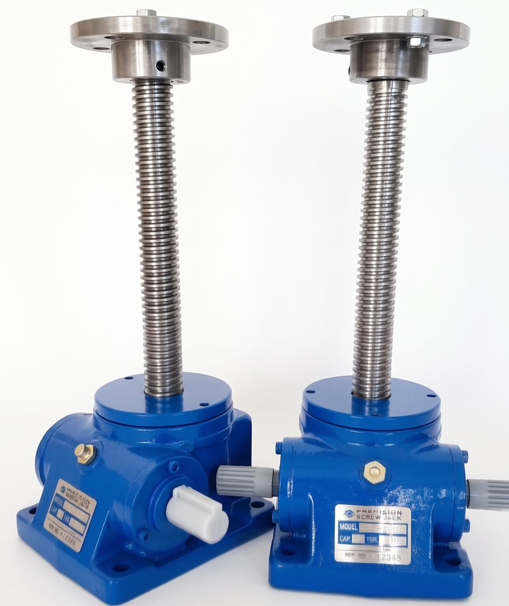
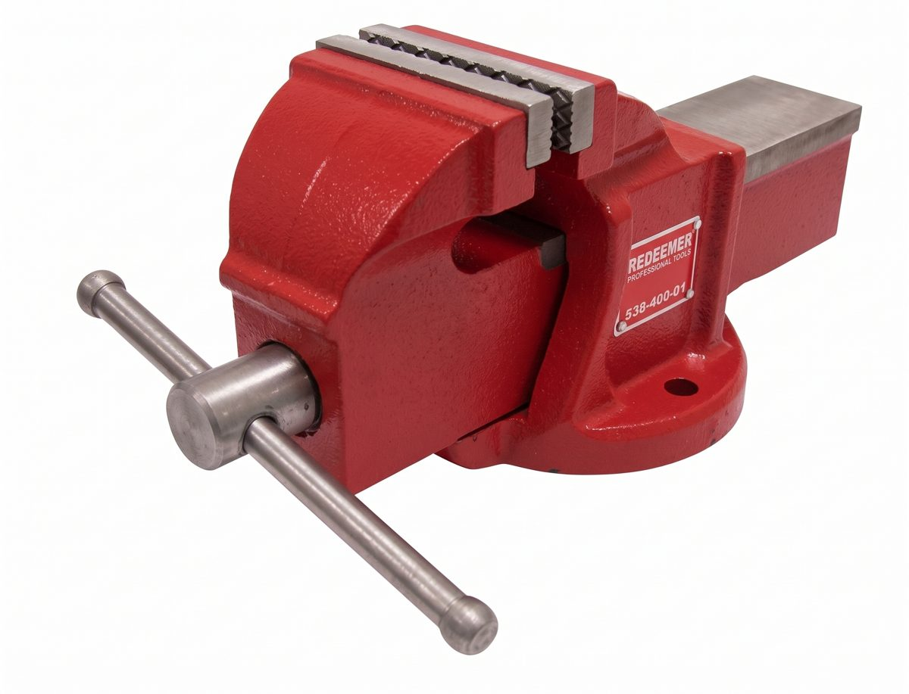
2.2 Square Threads
يُستخدم الـSquare Thread لنقل القدرة في الاتجاهين. يتميز بكفاءة مرتفعة نسبيًا وبقوة شعاعية صغيرة على الصامولة؛ لأن جوانب السن عمودية تقريبًا على محور الـscrew. لكن تصنيعه أصعب، كما أن تعويض الـwear ليس سهلًا مثل بعض الأشكال الأخرى.
التطبيقات الشائعة: screw jacks، presses، clamping devices، وvices.
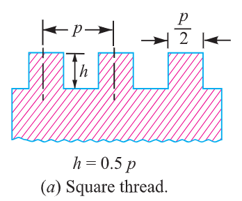
2.3 Acme / Trapezoidal Threads
الـAcme أو Trapezoidal Thread تعديل للـsquare thread، وجوانبه مائلة. يسهل تصنيعه باستخدام dies أو أدوات قطع مناسبة، ويزيد ميل الجوانب من مساحة مقاومة القص في السن، لكنه يرفع الـnormal force والضغط الشعاعي على الصامولة، فتكون كفاءته أقل قليلًا من square thread عند الظروف نفسها.
قد تختلف زاوية الـtrapezoidal thread القياسية باختلاف النظام المعتمد؛ لذا لا تعمم زاوية Acme على كل thread trapezoidal دون مراجعة المواصفة.
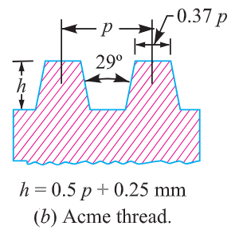
2.4 Buttress Threads
يُستخدم الـButtress Thread عندما يكون الحمل المحوري الكبير في اتجاه واحد غالبًا. يجمع بين كفاءة قريبة من square thread وسهولة تصنيع أفضل من square في بعض التطبيقات، كما أن قاعدة السن السميكة تمنحه مقاومة جيدة. من أمثلته بعض jack screws والـvices والأنظمة ذات الحمل أحادي الاتجاه.
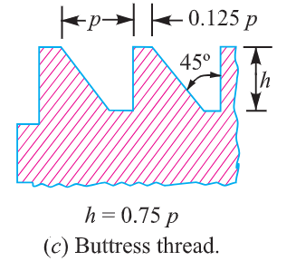
2.5 Multiple-start Threads
في screw أحادي البداية، يساوي الـlead الـpitch. أما في screw متعدد البدايات، فالـlead يساوي عدد البدايات مضروبًا في الـpitch. زيادة الـlead تعني حركة محورية أكبر لكل لفة، لكنها تزيد احتمال فقدان self-locking.
حيث \(n_s\) عدد بدايات السن. يُستخدم ذلك عندما نحتاج حركة أسرع أو ضبطًا أكثر سرعة، مع مراعاة الاحتكاك والثبات.
- لماذا يُفضَّل square thread في نقل القدرة رغم صعوبة تصنيعه؟
- ما سبب استخدام buttress thread في حالة الحمل أحادي الاتجاه؟
- ما المقايضة الهندسية عند زيادة عدد بدايات السن؟
Screw Geometry and Helix Angle
يمكن تخيل سطح الـscrew الأسطواني وقد فُرد إلى سطح مستوٍ. عند فرد لفة واحدة، يظهر مسار السن على هيئة مثلث قائم: محيط الأسطوانة عند mean diameter يمثل الضلع الأفقي، والـlead يمثل الضلع الرأسي، ومسار السن هو الوتر.
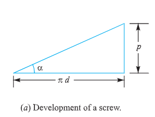
للـsingle-start screw: \(\text{Lead}=p\). ولـmulti-start screw: \(\text{Lead}=n_s p\).
العلاقات السابقة هندسة تقريبية لسن square-thread ذي عمق شعاعي يقارب \(p/2\). إذا أعطى السؤال أبعادًا معيارية أو عمقًا مختلفًا، استخدم القيم المعطاة ولا تفرض العلاقة التقريبية.
Torque as a force at the mean radius
إذا كان الجهد المحيطي عند mean diameter هو \(P_t\)، فإن عزم الـthread:
في وحدات N وmm يكون العزم N·mm؛ للتحويل إلى N·m اقسم على 1000. انتبه إلى أن قطر العزم هو mean diameter وليس دائمًا outside diameter.
- احسب \(\alpha\) لولب mean diameter له 40 mm وlead يساوي 8 mm.
- إذا كان screw ذا بدايتين وpitch = 6 mm، فما الـlead؟
Torque Required to Raise a Load
4.1 Force model on the unwrapped helix
عند فرد سن الـscrew، يتحول السطح الحلزوني إلى مستوى مائل زاويته \(\alpha\). أثناء رفع الحمل، يعمل الاحتكاك في الاتجاه المعاكس للحركة. نرمز إلى الحمل المحوري بـ\(W\)، والجهد المحيطي المطلوب بـ\(P_t\)، ورد الفعل العمودي بـ\(R_N\)، وقوة الاحتكاك بـ\(F=\mu R_N\).
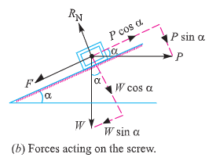
4.2 Resolve forces
على اتجاه المستوى المائل:
عموديًا على المستوى:
نعوّض (2) في (1):
وباستخدام \(\mu=\tan\phi\)، حيث \(\phi\) هي friction angle، نحصل على:
ومن ثم فإن عزم رفع الحمل بسبب احتكاك الـthread وحده:
4.3 Useful algebraic form
هذه الصيغة مناسبة للتعويض العددي عندما تكون \(\tan\alpha\) و\(\mu\) معلومتين. لا تخلط بين \(\phi\) بالدرجات وبين \(\mu\)، فمعامل الاحتكاك ليس زاوية.
- لماذا تكون قوة الاحتكاك مساوية \(\mu R_N\) وليس \(\mu W\)؟
- اشتق صيغة \(P_t=W\tan(\alpha+\phi)\) من معادلتي الاتزان.
- إذا زاد معامل الاحتكاك مع ثبات الحمل والـlead، فكيف يتغير عزم الرفع؟
Torque Required to Lower a Load
عند خفض الحمل، يتغير اتجاه الاحتكاك لأنه يعاكس اتجاه الحركة المحتملة. باتباع convention المحاضرة، تكون معادلات الاتزان:
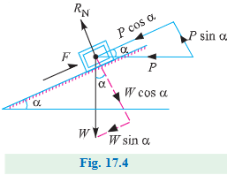
بالتعويض وإعادة الترتيب:
إذا كانت \(\phi>\alpha\)، فالقيمة موجبة وفق هذا convention: يلزم بذل عزم لخفض الحمل. إذا كانت \(\alpha>\phi\)، تصبح القيمة سالبة؛ أي أن الحمل قد يقود الحركة ويميل إلى النزول ذاتيًا، وهذه حالة overhauling.
- لماذا تتغير إشارة زاوية الاحتكاك في صيغة الخفض من \(\alpha+\phi\) إلى \(\phi-\alpha\)؟
- ما التفسير الفيزيائي للعزم السالب أثناء الخفض؟
Thrust-Collar Friction
إذا كان الحمل المحوري ينتقل عبر thrust collar بحيث لا يدور الحمل مع الـscrew، يظهر عزم احتكاك إضافي على سطح الـcollar. نرمز إلى معامل احتكاك الـcollar بـ\(\mu_c\)، ونصف القطر الخارجي والداخلي بـ\(R_o,R_i\).
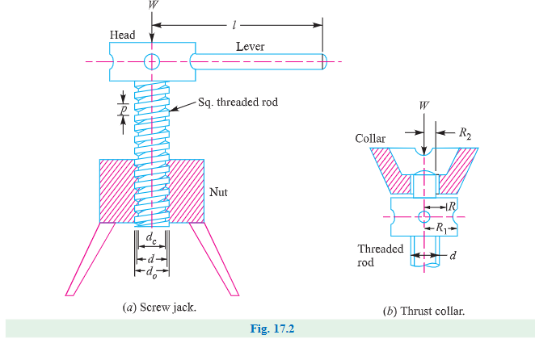
6.1 Uniform pressure
يفترض هذا النموذج توزيع ضغط منتظم على مساحة التلامس. لا تستخدم نصف قطر متوسط حسابيًا بسيطًا بدل هذه الصيغة إذا نص السؤال على uniform pressure.
6.2 Uniform wear
يفترض نموذج uniform wear أن حاصل الضغط في نصف القطر ثابت تقريبًا، ويُستخدم كثيرًا في مسائل تصميم الـscrew. انتبه إلى أن \(R_o,R_i\) أنصاف أقطار وليسا أقطارًا.
6.3 Total torque and power
إذا كان الجهد اليدوي \(P_h\) يؤثر عند نهاية ذراع طوله \(L\):
إذا كانت هناك يدان تؤثران بالتساوي على عجلة نصف قطرها \(R_w\)، فإن العزم الخارجي يساوي مجموع عزمي اليدين، أي \(T=2P_hR_w\). لا تستخدم عدد الأيدي مرتين إذا كانت المسألة تعطي القوة الكلية بالفعل.
في المعادلة الأخيرة يجب أن يكون \(T\) بوحدة N·m للحصول على القدرة بالـwatt. إذا كان العزم N·mm، اقسمه على 1000 أولًا.
- متى تستخدم uniform pressure ومتى تستخدم uniform wear؟
- احسب عزم collar عند \(W=10\,kN\)، و\(\mu_c=0.1\)، و\(R_o=40\,mm\)، و\(R_i=20\,mm\) تحت فرض uniform wear.
- ما الفرق بين torque وpower؟
Friction Coefficients — Lecture 1, Slides 21–22
معامل الاحتكاك ليس ثابتًا مطلقًا؛ يتأثر بمواد الـscrew والـnut، وجودة تشغيل السنون، والتشحيم، وضغط التلامس، وسرعة الانزلاق. لذلك يجب اختيار قيمة مناسبة لحالة التشغيل، مع التمييز بين starting وrunning friction.
Thread friction
| Condition | Starting μ | Running μ |
|---|---|---|
| High-grade materials/workmanship; best running conditions | 0.14 | 0.10 |
| Average materials/workmanship and conditions | 0.18 | 0.13 |
| Poor workmanship, very slow/infrequent motion, indifferent lubrication, or newly machined surfaces | 0.21 | 0.15 |
Thrust-collar friction
| Contact pair | Starting μc | Running μc |
|---|---|---|
| Soft steel on cast iron | 0.17 | 0.12 |
| Hardened steel on cast iron | 0.15 | 0.09 |
| Soft steel on bronze | 0.10 | 0.08 |
| Hardened steel on bronze | 0.08 | 0.06 |
- لماذا تكون قيمة starting friction غالبًا أكبر من running friction؟
- لماذا لا يصح استخدام معامل احتكاك الـthread بدل معامل احتكاك الـcollar دون الرجوع إلى بيانات السطحين؟
Efficiency of Square-Threaded Screws
7.1 Efficiency without collar friction
الكفاءة هي نسبة الشغل المفيد إلى الشغل الداخل. في دورة واحدة، يتحرك الحمل مسافة تساوي الـlead، بينما يتحرك الجهد المحيطي على محيط دائرة الـmean diameter. لذلك يمكن تعريفها باستخدام نسبة الجهد المثالي إلى الجهد الفعلي أو نسبة العزم المثالي إلى العزم الفعلي.
هذه الصيغة تخص احتكاك الـthread وحده. مع وجود collar friction:
حيث يُحسب \(T_0\) باعتبار screw مثاليًا بلا احتكاك. لا يجوز استخدام صيغة كفاءة الـthread وحده ثم الادعاء أنها الكفاءة الكلية إذا كان collar friction موجودًا.
7.2 Mechanical advantage and velocity ratio
ومن ثم:
7.3 Maximum efficiency
لـsquare-thread screw عند إهمال collar friction:
يمكن إعادة كتابة الكفاءة باستخدام هويات المثلثات:
تبلغ الكفاءة أقصاها عندما \(\sin(2\alpha+\phi)=1\)، أي:
- لماذا تكون الكفاءة الكلية أقل من كفاءة الـthread وحده عند إضافة collar friction؟
- اشتق زاوية الكفاءة العظمى.
- هل تعني أعلى كفاءة أن الـscrew سيكون self-locking؟ وضح.
Worked Example — Handwheel Diameter (Power Screw Lecture, Slides 29–30)
Single-start square-threaded vertical screw: mean diameter \(d=50\,mm\), pitch \(p=12.5\,mm\), load \(W=10\,kN\), mean collar diameter \(60\,mm\), thread friction \(\mu=0.15\), collar friction \(\mu_c=0.18\). Each of two hands applies a tangential force of \(100\,N\). Find the handwheel diameter.
Helix angle and thread effort
Total torque including collar friction
Handwheel diameter
قوتان كل منهما \(100\,N\) تؤثران على محيط العجلة، لذا يكون العزم الخارجي \(T=2P_1(D_1/2)=100D_1\).
Worked Example — Broaching Machine (Power Screw Lecture, Slides 31–35)
Square-thread screw: outside diameter \(d_o=55\,mm\), pitch \(p=10\,mm\), axial load \(W=400\,N\). The operating nut bears on a flat annular surface with inside diameter \(60\,mm\) and outside diameter \(90\,mm\). The friction coefficient on all contact surfaces is \(0.15\). Cutting speed is \(6\,m/min\). Find power and efficiency.
Screw geometry
Thread effort and total torque
Rotational speed and power
بافتراض أن حركة اللولب تقابل تقدمًا محوريًا مقداره lead في كل لفة، ولأنه single-start فإن \(lead=p=0.01\,m\).
Efficiency
Worked Example C — Two-Start Square Screw
Vertical two-start square-thread screw، mean diameter = 100 mm، pitch = 20 mm، load = 18 kN، collar OD = 250 mm وID = 100 mm، lever length = 400 mm، \(\mu=0.15\) للـthread و\(\mu_c=0.20\) للـcollar. احسب effort لرفع الحمل وخفضه باستخدام طريقة المحاضرة.
Lead and helix angle
Raising
Lowering
وفق صيغة المحاضرة، يضاف عزم collar المقاوم أثناء الخفض:
- ما الخطأ إذا استخدمت pitch بدل lead لحساب \(\alpha\) في هذا المثال؟
- لماذا قد تكون قوة الخفض أقل كثيرًا من قوة الرفع مع وجود collar؟
Efficiency vs. Helix Angle — Lecture 1, Slide 39
تعتمد كفاءة الـsquare-thread screw على كل من helix angle \(\alpha\) وfriction angle \(\phi\):
تُظهر المنحنيات في الشريحة لثلاث قيم لمعامل الاحتكاك \(\mu=0.05, 0.10, 0.15\) أن الكفاءة ترتفع بسرعة في البداية مع زيادة \(\alpha\)، ثم يصبح معدل التحسن أبطأ. يحدد الاحتكاك المنحنى الذي تعمل عليه المنظومة؛ وعند اختيار زاوية كبيرة يجب ألا ننظر إلى الكفاءة وحدها، بل نتحقق أيضًا من شرط الـself-locking واحتمال الـoverhauling.
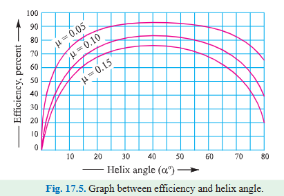
Self-Locking and Overhauling
8.1 Definitions
يكون الـscrew self-locking عندما لا يستطيع الحمل إنزال نفسه من دون عزم خارجي مناسب. في نموذج الـthread وحده، الشرط هو:
أما overhauling فيحدث عندما يقود الحمل الحركة ويبدأ في النزول من تلقاء نفسه وفق النموذج:
شرط self-locking مهم في screw jacks والـpresses التي يجب أن تحتفظ بالحمل عند إزالة الجهد. ومع ذلك، لا يُعد الاحتكاك وحده وسيلة أمان كافية في الأنظمة عالية الخطورة؛ قد تتطلب التطبيقات فرامل أو آلية قفل مستقلة.
8.2 Why self-locking efficiency is below 50%
عند self-locking، \(\alpha\le\phi\)، وبالتالي:
وباستخدام \(\tan2\phi=\frac{2\tan\phi}{1-\tan^2\phi}\)، ينتج ضمن المجال المعتاد للزاوية:
إذن كفاءة screw self-locking أقل من 50% في النموذج التقليدي. عند الحد \(\alpha=\phi\)، تكون الحالة حدية؛ ويُكتب الشرط في بعض الأسئلة \(\mu>\tan\alpha\) للـself-locking الصارم، أو \(\mu\ge\tan\alpha\) إذا شملنا الحد الفاصل.
- ما معنى أن كفاءة screw تتجاوز 50% بالنسبة إلى self-locking؟
- لماذا لا يُنصح بالاعتماد على self-locking وحده كوسيلة أمان في رفع الأحمال؟
Acme or Trapezoidal Threads — المحاضرة الثانية
بعد إنهاء المحاضرة الأولى ننتقل إلى زيادة رد الفعل العمودي والـvirtual friction، ثم مثال الـlathe lead screw، فالإجهادات، وتصميم الـscrew jack، ومثال الـshaft straightener ومشروع التصميم.
Acme / Trapezoidal Threads and Virtual Friction
في square thread تكون القوة العمودية على flank بسيطة نسبيًا. أما في Acme/trapezoidal thread فجانبا السن مائلان بزاوية نصفية \(\beta\)، ولذلك يجب أن تزيد قوة التلامس العمودية حتى يكون مركبها المحوري مساويًا للحمل.
وبالتالي تصبح قوة الاحتكاك:
يسمى \(\mu_v\) الـvirtual coefficient of friction، ويسمى \(\phi_v\) الـvirtual friction angle. بهذه الطريقة يمكن استخدام معادلات square thread مع استبدال \(\mu\) بـ\(\mu_v\) أو \(\phi\) بـ\(\phi_v\):
تُحسب أبعاد الـAcme screw وفق أبعاد السن المعيارية المعطاة في السؤال، ولا ينبغي تطبيق عمق square thread آليًا إذا كانت مواصفة السن تعطي عمقًا مختلفًا.
- لماذا يكون \(\mu_v>\mu\) عندما \(\beta\ne0\)؟
- كيف تتغير معادلة عزم الرفع في Acme thread مقارنةً بـsquare thread؟
Worked Example A — Acme Lead Screw
Lead screw لآلة lathe له Acme threads، outside diameter = 50 mm، pitch = 8 mm، axial thrust = 2500 N، thrust collar outside diameter = 110 mm وinside diameter = 55 mm، speed = 30 rpm. معامل الاحتكاك عند الـthread = 0.15 وعند الـcollar = 0.12. احسب القدرة والكفاءة.
Mean diameter and helix angle
لـAcme thread، \(2\beta=29^\circ\)، إذن \(\beta=14.5^\circ\).
Tangential force at thread
Thread torque
Collar torque (uniform wear)
Total torque and power
Efficiency
- أي جزء من العزم أكبر في المثال: thread أم collar؟
- كيف تتغير القدرة إذا تضاعفت السرعة مع بقاء العزم ثابتًا؟
- هل كفاءة 13% تخص الـthread وحده؟ لماذا؟
Stresses in Power Screws
10.1 Direct tensile or compressive stress
الحمل المحوري يسبب direct stress على مساحة core section، لأن أضعف مقطع في جسم الـscrew يكون عادةً عند core diameter.
تستخدم المعادلة نفسها من حيث المقدار للشد أو الضغط، مع اختلاف إشارة الإجهاد. في screw jack يكون الحمل غالبًا ضاغطًا.
10.2 Torsional shear stress
عزم الرفع يسبب torsional shear stress في core section الدائري:
يجب إدخال العزم بوحدة N·mm والقطر بالـmm للحصول على N/mm². عند حساب الإجهاد المركب، استخدم العزم المناسب الذي يمر عبر المقطع؛ إذا كان collar torque خارجيًا عند الرأس، فالعزم الداخلي في جزء الـscrew يتحدد من مسار انتقال العزم في النظام.
10.3 Combined direct stress and torsion
وفق maximum shear stress theory (Tresca-style form المستخدمة في السلايدز)، يكون:
والإجهاد الرئيسي الأكبر في حالة الضغط مع torsion، بصيغة المقدار المستخدمة في المحاضرة:
يجب مقارنة الإجهاد المحسوب بالإجهاد المسموح، أي مقاومة المادة مقسومة على factor of safety عند اعتماد التصميم على أساس allowable stress.
10.4 Buckling of the screw
إذا كان الـscrew طويلًا وتحت ضغط محوري، فقد يفشل بالانبعاج قبل بلوغ إجهاد الضغط المسموح. من الصيغ المعروضة في المحاضرة Rankine–Gordon/Johnson-style:
حيث \(A_c\) مساحة الـcore، و\(\sigma_y\) yield stress، و\(E\) modulus of elasticity، و\(L\) الطول الفعال حسب end condition، و\(k=\sqrt{I/A}\) least radius of gyration، و\(c\) معامل تثبيت النهايات كما يعرّفه المرجع المستخدم. توجد صيغ Rankine أخرى تستخدم ثابتًا تجريبيًا مختلفًا؛ لذلك يجب التحقق من convention الوارد في الكتاب.
10.5 Thread shear stress
تقريبًا، مساحة القص على الأسنان المتداخلة تتناسب مع محيط قطر القص وعدد الأسنان وسمك السن. الصيغ الواردة في المحاضرة:
حيث \(n=h/p\) عدد الأسنان المتداخلة، و\(t\approx p/2\) لسن square idealized. الصيغة تقريب تصميمي؛ بعض المراجع تستخدم أقطارًا فعالة أو عوامل هندسية مختلفة بحسب شكل السن.
10.6 Thread bearing pressure
وهذه مكافئة تقريبًا للصيغة المعتمدة على المساحة المسقطة للسطح الحامل للسن:
المعادلتان تقريبيتان ومتقاربتان عندما يكون عمق السن وعرضه متوافقين مع هندسة square thread؛ لا تخلط بين المساحة المسقطة ومساحة flank الحقيقية.
- لماذا يستخدم core diameter في direct stress وtorsional shear؟
- كيف يؤثر ارتفاع الصامولة في bearing pressure وthread shear؟
- ما الفرق بين إجهاد القص الناتج من torsion وإجهاد القص على أسنان السن؟
- لماذا لا يكفي فحص compressive stress وحده في تصميم screw jack؟
Screw-Jack Design Workflow
يتكون screw jack التقليدي من screwed spindle، nut، nut collar، head، handle، load cup، body، وbase. الهدف ليس اختيار قطر الـscrew فقط، بل التحقق من سلسلة الأجزاء ومسار انتقال الحمل والعزم.
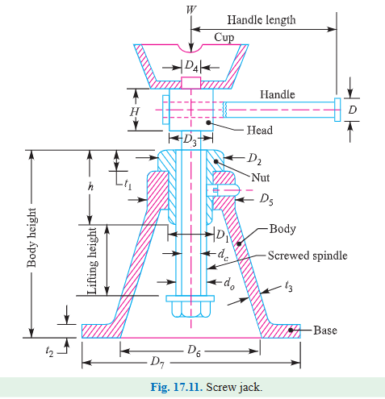
Step-by-step design procedure
- Choose screw core diameter. من ضغط محوري مبدئي: \(W=\sigma_{c,allow}\frac{\pi d_c^2}{4}\). ثم اختبر الإجهاد المركب لاحقًا.
- Determine thread geometry. اختر standard thread size، واحسب \(d_m\)، والـlead، و\(\alpha\). استخدم lead لا pitch وحده في multi-start screw.
- Calculate raising torque. \(T_1=W(d_m/2)\tan(\alpha+\phi)\)، أو virtual friction angle للـAcme thread.
- Calculate combined stress. \(\sigma_c=4W/(\pi d_c^2)\)، و\(\tau_t=16T_1/(\pi d_c^3)\)، ثم \(\tau_{max}\) أو معيار الفشل المطلوب.
- Design nut height. من bearing pressure: \(n=W/(p_b\pi d_m t)\)، ثم \(h=np\). تحقق من thread shear في screw وnut، واختر عددًا صحيحًا مناسبًا من الأسنان.
- Design nut collar. حدّد inner/outer diameters وthickness من crushing/compression and shear checks حسب مساحة التحميل الفعلية.
- Size the head. في المحاضرة قاعدة تقريبية \(D_3\approx1.75d_o\) و\(D_4\approx D_3/4\) لقطر pin. تعامل معها كقاعدة أولية لا معيارًا عامًا.
- Calculate collar friction. استخدم uniform wear أو uniform pressure حسب السؤال، ثم اجمع \(T=T_1+T_c\).
- Design handle. إذا كان الجهد اليدوي التصميمي \(P_h\)، فإن \(L=T/P_h\). احسب قطر الذراع من bending stress: \(M=P_hL\)، وللقطع الدائري المصمت \(\sigma_b=32M/(\pi D^3)\).
- Determine head height. المحاضرة تقترح مبدئيًا \(H\approx2D\) (حيث D قطر الـhandle في تلك الشريحة)، لكن يجب تفسير الرمز من الرسم وعدم تعميمها على كل تصميم.
- Check buckling. الطول غير المدعوم يساوي تقريبًا lift plus nut engagement where appropriate، لكن effective length يتبع end conditions الحقيقية.
- Design body and base. تحقق من crushing, bearing, bending, stability and clearance، مع تصميم مسار حمل متصل حتى القاعدة.
- Final checks. افحص efficiency، self-locking، قابلية التصنيع، التشحيم، wear، ووجود وسيلة أمان مستقلة إذا كان التطبيق يتطلب ذلك.
- رتّب فحوص التصميم التي يجب تنفيذها قبل اعتماد قطر screw نهائي.
- لماذا لا يجوز تحديد طول الـhandle من torque الخاص بالـthread وإهمال collar friction؟
- ما المعلومات اللازمة قبل تطبيق buckling formula؟
Worked Example B — Shaft Straightener
Load \(W=30\,kN\)، square thread outside diameter \(d_o=75\,mm\)، pitch \(p=6\,mm\)، handwheel diameter = 300 mm، ومعامل احتكاك thread = 0.12. ارتفاع nut engagement = 150 mm. المطلوب: effort at wheel rim، direct compressive stress، thread bearing pressure، maximum shear stress، والكفاءة.
Core and mean diameters
Raising torque
عزم عجلة اليد يساوي \(P_h(D_w/2)\)، لذلك:
Direct compressive stress
Bearing pressure on threads
Torsional shear and maximum shear
Efficiency
- لماذا استخدمنا \(d_c\) لحساب \(\sigma_c\) و\(\tau_t\)، لكن \(d_m\) في torque وbearing pressure؟
- ما أثر زيادة nut height مع ثبات الحمل والـpitch على متوسط bearing pressure؟
Design Project — Screw Jack for an 80 kN Load (Lecture 2, Slide 33)
صمّم وارسم screw jack لرفع حمل \(W=80\,kN\) مسافة \(400\,mm\). مقاومة مادة الـscrew المرنة في الشد والضغط \(200\,MPa\)، وفي القص \(120\,MPa\). مادة الـnut هي phosphor bronze وحدودها المرنة: شد \(100\,MPa\)، ضغط \(90\,MPa\)، وقص \(80\,MPa\). يجب ألا يتجاوز bearing pressure بين الـnut والـscrew مقدار \(18\,N/mm^2\).
يجب أن يشمل التصميم: (1) screw، (2) nut، (3) handle and cup، (4) body.
Design deliverables
- اختيار core diameter للـscrew من direct compression، ثم حساب raising torque والتحقق من combined direct stress and torsional shear.
- اختيار pitch وmean diameter، وحساب عدد الأسنان المتلامسة وارتفاع الـnut من bearing-pressure limit.
- فحص thread shear في الـscrew والـnut، مع استخدام allowable stresses الخاصة بكل مادة.
- تصميم handle من bending moment الناتج عن العزم المطلوب، وتصميم الـhead والـcup وفق انتقال الحمل.
- تصميم body والـbase، والتحقق من crushing/bearing، ثم فحص screw buckling عند أقصى امتداد.
- إعداد رسم تجميعي sectional يوضح الأبعاد الرئيسية والأجزاء ومسار انتقال الحمل.
Reference Extensions — إضافات المرجع
هذا القسم يضيف الموضوعات المرجعية التي توسّع الفهم أو تدعم التصميم، من دون تقديمها على ترتيب المحاضرتين.
Differential and Compound Screws
15.1 Why use them?
عندما نحتاج حركة دقيقة جدًا أو حركة سريعة، قد لا يكون اختيار pitch واحد كافيًا. تقليل pitch يجعل الحركة الدقيقة ممكنة لكنه قد يضعف الأسنان، بينما زيادة lead قد تقلل self-locking. تستخدم differential and compound screws لترتيب حركتين حلزونيتين بطريقة تعطي إزاحة محصلة مختلفة.
15.2 Differential screw
يحتوي على threadين في الاتجاه نفسه (كلاهما right-hand أو كلاهما left-hand) لكن بــpitches مختلفة. إذا كانت الحركة النسبية لولبَي التعشيق متعاكسة في تأثيرها على الإزاحة الصافية، تكون الإزاحة لكل لفة مساوية لفرق الـleads؛ وفي حالة single-start يساوي فرق الـpitches:
إذا كان الـthreadان على الأسطوانة نفسها، قد يوجد nutان كما في arrangement (a). وإذا كانا على أسطوانتين مختلفتين، قد يكون هناك nut واحد كما في arrangement (b)، وفق التصميم الموضح في الشكل.
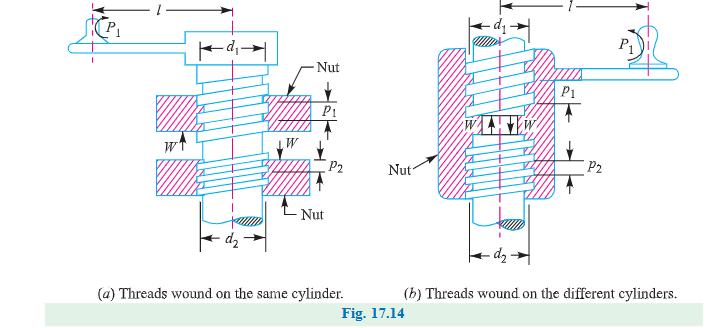
لكل thread عزم رفع وفق قطره المتوسط وزاوية الحلزون وزاوية الاحتكاك. إذا رمزنا إلى عزمي التأثير بـ\(T_1,T_2\)، فإن العزم المحرك الصافي في النموذج المعروض يساوي الفرق الجبري:
في الحالة المثالية بلا احتكاك:
والكفاءة وفق النموذج:
15.3 Compound screw
يحتوي على threadين متعاكسَي الاتجاه (واحد right-hand والآخر left-hand). تتحرك الصواميل نحو بعضها، ولذلك تكون الحركة المحصلة لكل لفة مساوية لمجموع الـleads:
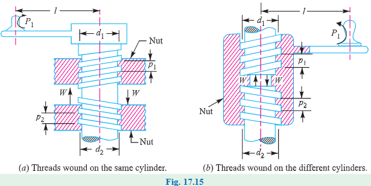
تضيف التأثيرات عزمًا في الاتجاه المحرك نفسه في النموذج المبسط:
| Feature | Differential screw | Compound screw |
|---|---|---|
| Thread handedness | Same hand | Opposite hands |
| Net movement per revolution | Difference in leads | Sum of leads |
| Typical purpose | Very fine, controlled motion | Combined / increased relative motion |
| Ideal torque relation in the lecture model | \(T_0=W(p_1-p_2)/(2\pi)\) | \(T_0=W(p_1+p_2)/(2\pi)\) |
- لماذا تعطي differential screw حركة صغيرة عندما يكون pitchان متقاربين؟
- ما الفرق بين differential وcompound screw من حيث handedness والحركة المحصلة؟
- متى تستخدم leads بدل pitches في المعادلات السابقة؟
Design Checks, Tables, and Source Corrections
16.1 Coefficient of friction — indicative values
| Condition | Starting \(\mu\) | Running \(\mu\) |
|---|---|---|
| High-grade materials, good workmanship, best running conditions | 0.14 | 0.10 |
| Average materials/workmanship/conditions | 0.18 | 0.13 |
| Poor workmanship, very slow or infrequent motion, indifferent lubrication, or newly machined surface | 0.21 | 0.15 |
هذه قيم إرشادية من السلايد وليست ثوابت مادية عامة. يتغير معامل الاحتكاك بحسب المواد والتشحيم والسرعة والضغط وحالة السطح.
16.2 Thrust-collar friction coefficients
| Contact pair | Starting \(\mu_c\) | Running \(\mu_c\) |
|---|---|---|
| Soft steel on cast iron | 0.17 | 0.12 |
| Hardened steel on cast iron | 0.15 | 0.09 |
| Soft steel on bronze | 0.10 | 0.08 |
| Hardened steel on bronze | 0.08 | 0.06 |
16.3 Limiting bearing pressures
| Application | Screw material | Nut material | Safe bearing pressure (N/mm²) | Rubbing speed at pitch diameter |
|---|---|---|---|---|
| Hand press | Steel | Bronze | 17.5–24.5 | Low, well lubricated; < 2.4 m/min |
| Screw jack | Steel | Cast iron | 12.6–17.5 | Low; < 3 m/min |
| Screw jack | Steel | Bronze | 11.2–17.5 | Low speed |
| Hoisting screw | Steel | Cast iron | 4.2–7.0 | Medium; 6–12 m/min |
| Hoisting screw | Steel | Bronze | 5.6–9.8 | Medium; 6–12 m/min |
| Lead screw | Steel | Bronze | 1.05–1.7 | High; > 15 m/min |
16.4 Corrections and interpretation notes
- Mean diameter: في square-thread idealization \(d_m=d_o-p/2\). في مسائل أخرى استخدم الأقطار المعطاة أو معيار السن.
- Acme normal reaction: استخدم \(R_N=W/\cos\beta\) وفق تعريف \(\beta\) كزاوية نصفية للـthread flank، ومنه \(\mu_v=\mu/\cos\beta\).
- Torque with collar: overall torque هو مجموع عزم الـthread وعزم الـcollar أثناء الرفع. في lowering، اجمع العزوم جبريًا وفق اتجاهاتها.
- Stress criteria: ميّز بين maximum shear stress وmaximum principal stress، وحدد معيار الفشل المطلوب بدل مساواة كميات مختلفة.
- Buckling: end-fixity coefficient وتعريف effective length قد يختلفان بين المراجع؛ لا تنقل \(c\) من معادلة إلى أخرى دون التأكد من صيغة المرجع.
- Units: \(1\text{ MPa}=1\text{ N/mm}^2\)، و\(1\text{ N·m}=1000\text{ N·mm}\).
- لماذا يكون bearing pressure المسموح لــlead screw عالي السرعة أقل من hand press منخفض السرعة؟
- ما المعلومات التي ينبغي التحقق منها قبل اعتماد قيمة \(\mu\) من جدول؟
17. Reference Example — Differential Screw Jack (Example 17.17)
Outside diameter \(d_o=50\,mm\)، \(\mu=0.15\)، \(p_1=16\,mm\)، \(p_2=12\,mm\)، allowable maximum shear stress \(\tau_{max}=28\,MPa\). المطلوب تحديد الحمل والكفاءة وفق نموذج المرجع.
Mean diameters
Thread torques
للسن العلوي أثناء الرفع:
أما السن السفلي فيُحسب وفق اتجاه الحركة المعاكس المستخدم في المرجع:
Ideal torque and efficiency
Stress-based load
Core diameter of upper thread:
بحل المعادلة كما في المرجع، يكون الحمل التقريبي:
- لماذا يظهر عزم أحد threadين بإشارة سالبة في هذا النموذج؟
- لماذا نستخدم core diameter للسن الأعلى عند فحص الإجهاد المركب؟
Design Table: Formula Selection Guide
| Required quantity | Square thread | Acme / trapezoidal | Notes |
|---|---|---|---|
| Helix angle | \(\tan\alpha=\text{Lead}/(\pi d_m)\) | Same geometry | Use lead for multi-start screws. |
| Raising effort at mean radius | \(P_t=W\tan(\alpha+\phi)\) | \(P_t=W\tan(\alpha+\phi_v)\) | Thread friction only. |
| Thread torque, raising | \(T_1=P_t d_m/2\) | Same with virtual friction | Use N·mm if dimensions in mm. |
| Lowering effort | \(P_t=W\tan(\phi-\alpha)\) | Use \(\phi_v\) in idealized flank model | Sign indicates overhauling tendency. |
| Collar torque, uniform wear | \(T_c=\mu_c W(R_o+R_i)/2\) | Same | Radii, not diameters. |
| Overall efficiency | \(T_0/(T_1+T_c)\) | Same torque accounting | Include every friction interface. |
| Direct stress | \(4W/(\pi d_c^2)\) | Use core area per standard geometry | Compression or tension. |
| Torsional shear | \(16T/(\pi d_c^3)\) | Same | Torque at the section. |
| Thread bearing pressure | \(W/(\pi d_mtn)\) | Use geometry-specific projected area | Approximate model. |
اختر المعادلة المناسبة لكل حالة: (a) حساب effort لرفع load، (b) حساب efficiency مع collar، (c) فحص buckling، (d) فحص bearing pressure على الأسنان.
Final Formula Sheet
Geometry
Thread torque
Acme / trapezoidal
Collar, power, efficiency
Stress and design
Final problem-solving checklist
- حدد thread type وhandedness وعدد البدايات.
- استخدم lead لحساب helix angle.
- حدد friction coefficient لكل سطح منفصل: thread وcollar.
- احسب thread torque ثم أضف collar torque جبريًا حسب اتجاهه.
- حوّل الوحدات قبل حساب power.
- احسب efficiency من العزم المثالي إلى العزم الفعلي الكلي.
- تحقق من direct stress، torsional shear، thread shear، bearing pressure، وbuckling.
- في design، اختر أبعادًا معيارية ثم أعد كل الفحوص على الأبعاد المختارة.
- راجع self-locking ومتطلبات الأمان والتشحيم والتصنيع.
Final Question Bank — بنك الأسئلة في النهاية
جُمعت أسئلة التدريب والأسئلة النظرية والاختيار من متعدد في نهاية المذكرة حتى لا تقطع الأسئلة تسلسل الشرح.
Practice Problems from the Reference
هذه القائمة تجمع مسائل التدريب الواردة في الجزء المرجعي السابق. تُعرض المعطيات والنتائج المطبوعة عندما كانت متاحة؛ المسائل التي لا يتوافر لها حل مطبوع تُترك للتصميم الكامل دون اختلاق إجابة.
Problems 1–5
- Hand vice: double-start square thread، outside diameter 24 mm، lever 200 mm، maximum effort 250 N، \(\mu=0.12\). أوجد jaw holding force. Answer: 17,420 N
- Square-thread bolt: mean screw diameter 24 mm، pitch 5 mm، mean bearing diameter 50 mm، thread friction 0.10، bearing friction 0.16، load 10 kN، spanner 0.5 m. أوجد force on spanner. Answer: 120 N
- Screw jack: single-start square thread، outside diameter 45 mm، pitch 10 mm، mean bearing diameter 60 mm، thread friction 0.12، swivel friction 0.10، two levers each 100 N at 350 mm. أوجد load and efficiency. Answer: 9945 N; 22.7%
- Planer crossbar: weight 12 kN carried by two screws، OD 38 mm، pitch 7 mm، bronze nut height 38 mm، collar OD 75 mm and ID 38 mm، thread friction 0.11، collar friction 0.13، effort radius 100 mm. أوجد effort للرفع والخفض. Answer: 402.5 N; 267 N
- Lathe lead screw: square thread OD 24 mm، pitch 5 mm، axial load 2.5 kN، speed 30 rpm، \(\mu=0.12\). أوجد efficiency and power. Answer: 37.76%; 16.55 W
Problems 6–10
- Acme lead screw: OD 60 mm، pitch 8 mm، axial load 2000 N، collar radii 30 and 60 mm، thread friction 0.12، collar friction 0.10. أوجد torque and efficiency. Answer: 18.5 N·m; 13.6%
- Planer crossbar: load 9 kN supported by two square screws، OD 40 mm، pitch 6 mm، bronze nut height 42 mm، collar mean radius 30 mm، thread friction 0.14، collar friction 0.10، handwheel radius 120 mm. أوجد raising/lowering effort، nut shear stress، thread bearing pressure. Answer: 495 N; 346 N; 1.7 MPa; 1.84 N/mm²
- Machine slide: load 3000 N، double-start Acme screw، speed 840 mm/min، \(\mu=0.12\)، collar ID 32 mm and OD 58 mm، screw OD 40 mm. أوجد القدرة وتحقق من المقاومة. Printed answer: 0.165 kW
- Sluice valve: single-start square spindle، nominal diameter 36 mm، pitch 6 mm، collar ID 32 mm and OD 50 mm، thread friction 0.12، collar friction 0.18، gate weight 7.5 kN and water resistance 2.75 kN، uniform wear. أوجد torque and efficiency. Answer: 136.85 N·m; 7.1%
- Gear-driven screw: square screw mean diameter 70 mm، pitch 10 mm، load 50 kN، 70-tooth gear as nut، 20-tooth pinion، drive efficiency 90%، collar mean radius 100 mm، thread friction 0.15، collar friction 0.12. أوجد pinion torque، principal/shear stress، nut height for bearing pressure 12 MPa. Answer: 299.6 N·m; 26.6 MPa; 19 MPa; 40 mm
Problems 11–15
- C-clamp: single-start square thread، axial load 10 kN، thrust-pad mean diameter 30 mm، thread friction 0.12، pad friction 0.08، allowable tensile stress 60 MPa، bearing pressure 12 MPa. Standard nominal diameters 16/18/20/22 mm with core diameters 13/15/17/19 mm and pitch 3 mm. Design screw and nut. Answer: \(d_c=17\) mm; \(n=10\); \(h=30\) mm
- Design screw jack: lift 50 kN through 0.4 m؛ steel allowable compression 80 MPa and shear 45 MPa؛ bronze nut allowable tensile 40 MPa، bearing 15 MPa، shear 25 MPa؛ \(\mu=0.12\). Design screw, nut, handle and sketch. No printed answer supplied
- Screw jack: load 22 kN، \(\mu=0.15\)، neglect collar friction and column action، screw compression 42 MPa and shear 28 MPa، nut shear 21 MPa، bearing 14 MPa، handle 200 mm. Design screw/nut and find raising/lowering force and efficiency. Answer: \(d_c=30\) mm; \(h=36\) mm; 381 N; 166 N; 27.6%
- Design and draw screw jack: load 150 kN، lift 350 mm؛ screw elastic compression 240 MPa and shear 160 MPa؛ phosphor bronze nut elastic tension/compression/shear 130/115/100 MPa؛ thread bearing 18 MPa؛ body safe crushing 100 MPa؛ thread and collar friction 0.15. No printed answer supplied
- Toggle jack: load 5 kN؛ nut center distance 50–220 mm؛ eight symmetrical links 120 mm long؛ base pin centers 30 mm apart؛ mild steel allowable tension 90 MPa and shear 50 MPa؛ pin bearing 20 MPa؛ \(\mu=0.15\)؛ square pitch 6 mm. Answer: \(d_c=10\) mm; \(d_o=22\) mm; \(d=19\) mm; \(n=4\); \(t=24\) mm; \(b=33\) mm; \(d_1=10\) mm; \(t_1=7\) mm; \(b_1=21\) mm
Theory Question Bank — Consolidated
- Discuss the types of power threads, their applications, and their advantages/disadvantages.
- Why are square threads preferred over V-threads for power transmission?
- Explain the effect of helix angle on screw efficiency.
- Define overhauling in power screws.
- Define self-locking and explain where it is necessary.
- Show that the efficiency of a self-locking screw is less than 50%.
- List the factors affecting thread bearing pressure.
- Why is a separate nut often preferred over an integral nut in a screw-jack body?
- Differentiate between differential and compound screws.
- Explain the difference between uniform pressure and uniform wear assumptions for a thrust collar.
- Why does an Acme thread require a virtual coefficient of friction?
- Why should buckling be checked separately from direct compressive stress?
- Distinguish thread shear stress, torsional shear stress, and bearing pressure.
- Explain why adding collar friction reduces overall efficiency.
- Why is lead, rather than pitch, used to calculate helix angle for a multi-start screw?
Suggested answer points
- Square vs V-thread: square thread has higher efficiency and lower radial/bursting force; V-thread gives wedging action and is generally not preferred for efficient power transmission.
- Helix angle: raising it generally improves efficiency initially, but too large an angle can cause overhauling and may weaken the self-locking behavior.
- Overhauling: load tends to descend without an externally applied lowering torque when the driving effect of the helix exceeds friction in the idealized model.
- Self-locking: load does not descend by itself; for the thread-only model \(\alpha\le\phi\) or \(\mu\ge\tan\alpha\).
- Bearing pressure: depends on load, mean diameter, thread thickness, number of engaged threads, nut height, material pairing, lubrication, and rubbing speed.
- Separate nut: permits wear replacement and can use a material optimized for wear and friction rather than requiring the whole body to be made from the same material.
- Acme virtual friction: inclined flanks increase normal reaction for the same axial load; \(\mu_v=\mu/\cos\beta\) folds this effect into a square-thread-like formula.
Multiple-Choice Questions (MCQs) with Answers
- The thread used for power transmission in either direction is usually: (a) V-thread (b) Square thread (c) Knuckle thread (d) None. Answer: (b)
- Multiple threads are used mainly to secure: (a) higher strength only (b) high efficiency / larger lead (c) zero friction (d) lower pitch. Answer: (b)
- Power screws should preferably have: (a) low efficiency (b) high efficiency (c) maximum friction (d) zero lead. Answer: (b)
- The efficiency of a square-thread screw without collar friction is: (a) \(\tan(\alpha+\phi)/\tan\alpha\) (b) \(\tan\phi/\tan\alpha\) (c) \(\tan\alpha/\tan\phi\) (d) \(\tan\alpha/\tan(\alpha+\phi)\). Answer: (d)
- A screw is self-locking in the strict sense when: (a) \(\mu>\tan\alpha\) (b) \(\mu<\tan\alpha\) (c) \(\mu=0\) (d) \(\alpha=90^\circ\). Answer: (a)
- For a self-locking screw, helix angle is: (a) greater than friction angle (b) less than or equal to friction angle (c) always 45° (d) independent of friction. Answer: (b)
- The efficiency of a self-locking screw in the classical thread-only model is: (a) less than 50% (b) greater than 90% (c) exactly 100% (d) always zero. Answer: (a)
- An overhauling screw is typically associated with efficiency: (a) below 10% in every case (b) more than 50% in the classical model (c) exactly 50% only (d) independent of helix angle. Answer: (b)
- In the common screw-jack buckling idealization with one end fixed and the other free, the effective length is: (a) \(L/2\) (b) \(L/\sqrt2\) (c) \(2L\) (d) approximately \(2L\) in Euler effective-length convention. Answer: (d)
- The load cup may be separate from the spindle head to: (a) increase friction (b) reduce thread pitch (c) prevent the lifted load from rotating with the spindle (d) eliminate axial load. Answer: (c)
🤲 ولا تنسوا الصلاة على النبي صلى الله عليه وسلم، والدعاء لإخوانكم في فلسطين وغزة وفي جميع بقاع الأرض، وأن ينصر الله المسلمين المستضعفين. 🤲